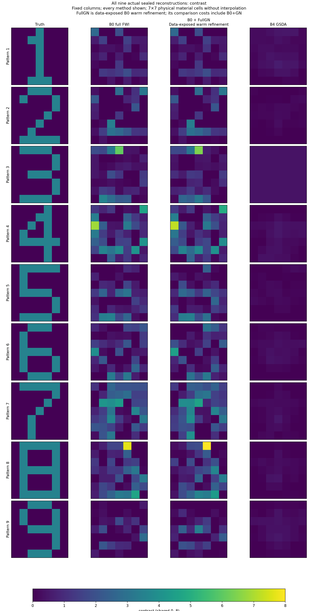
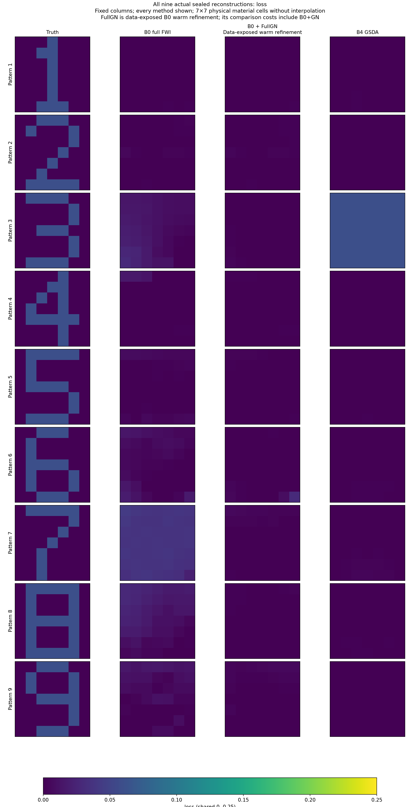
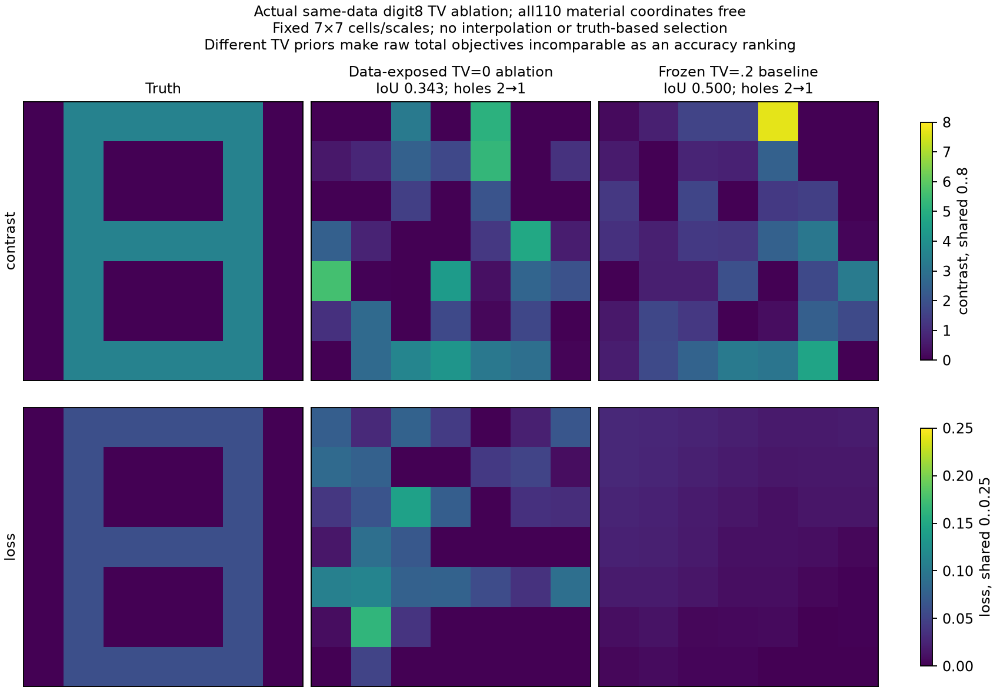
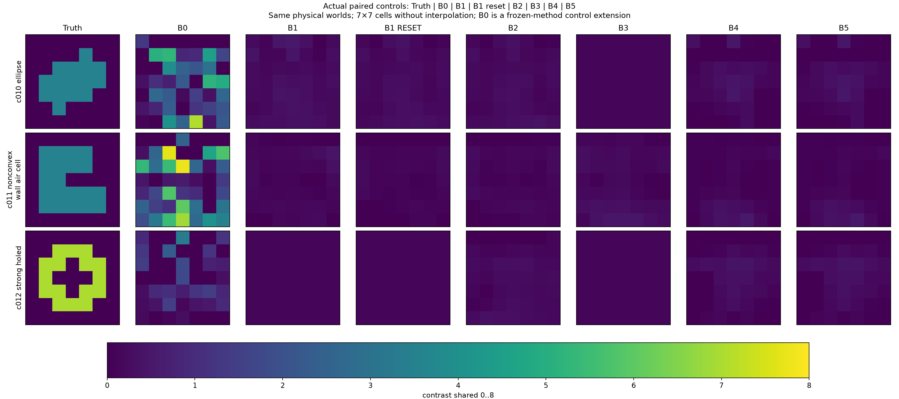

发布于2026-10-30（新加坡时间），经用户明确授权。科研已于2026-10-30 06:02封账；本次新增0 FE / 0 RHS。原报告中“未发布”保留为封账历史状态。发布记录
数字1–9都真正重建了，
但还没有达到准确穿墙成像
固定观测Green、完整材料吸收、内部谱预条件和可逆REOPEN均有实际代码与数据。九数字运行完成；准确材料/形状成像与同质量加速没有成立。
不能把同离散吸收恒等成立或电流残差较小，写成目标图像已恢复。
所有方法与失败一起展示
| 方法 | 实际数字运行 | IoU均值 | 复材料相对L2 | 训练白化RMS | 留出白化RMS | 完整成像通过 |
|---|---|---|---|---|---|---|
| 普通Full-FWI + TV | 9 / 9 | 0.287 | 0.949 | 0.961 | 0.563 | 0 / 9 |
| B0 + Full-GN补充 | 9 / 9 | 0.300 | 0.940 | 0.955 | 0.563 | 0 / 9 |
| 原生CSI + 风险筛选B4 | 9 / 9 | 0.000 | 0.957 | 1.657 | 1.410 | 0 / 9 |

不只看IoU：孔洞、笔画、材料与损耗
普通FWI和Full-GN留下一些笔画，但6/8/9的闭环与孔洞仍错，损耗大多接近零或弥散。B4多为弱材料云团。每个数字都实际执行，但B4数字3的最终物理目标选择了第0次公开均匀起点，不能说每例都优于初始化。

同数据TV消融有部分收益，不能归给Green吸收
数字8在相同数据、起点和其余先验下：TV0→TV.2，IoU 0.343→0.500，复材料相对误差0.943→0.756；质心误差0.075→0.106 λ0变差。两种都只恢复1个孔洞，没有恢复完整8。不同TV总目标不可直接比较大小。

机制可算对，不等于优化和成像有增量
精确吸收包含背景数据、有效照明及返回接收路径，同离散完整Maxwell核验通过。B2/B3实际吸收后重开，但目标图并未准确。三个独立控制中B4与普通同谱B5的最终材料和复预测逐元素完全相同，反而多用432 RHS；风险筛选全部KEEP_ACTIVE，没有付费目标J筛查。
48模态投影的全场误差仍约0.89–0.93，投影内Schur精确不能修复全空间信息丢失。主B3/B4只作保留全部电流方向的预条件，未实现安全删除完整弱空间。

数字背后的范围与账本
13个生成世界中1个开发，12个测试parent，每个1份噪声。49个终点是同批parent的方法与补充运行，不是49个独立物理样本。模型为4发16收、三频、实虚每坐标σ=.01，墙12与目标98个实变量共同优化；无字形模板或真实墙Green。
本轮预约13,158 FE / 191,940 complex RHS；物理在158.80分钟封账。已记录Book CPU约6,928秒，但早期Python启动未覆盖；不能把它当完整端到端CPU。仅2/5粗细网格真值差满足旧0.1白化门，无连续PDE认证。多数基线仍未达驻点，未宣称成熟FWI的上限。